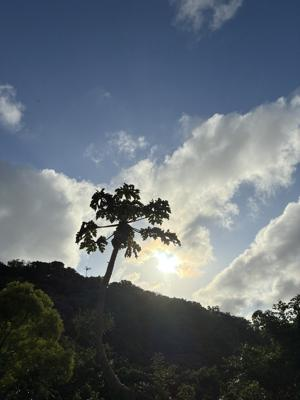
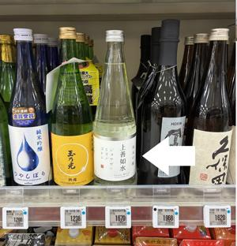
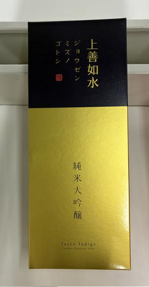

うるがいの話 ある日
最新: 役に立ったバイク【うるがいの話 ある日】とは 一日だけのプログです
『うるがいの話』の最新一日だけのプログで、通信料が少なく経済的だ。カニの画像をクリックすると全ての日付が載る『うるがいの話』サイトを表示します
|
|
【うるがいの話】 うるがい(ｳﾙｶﾞｲ urugai)とは、『もずくがに』の名前でとても大きくなります。 |
|---|---|
|
|
【カミマヤーの話】 猫のことを方言でマヤーといいます。カミマヤー（kamimayaa）とは、神の猫のことです。 |
|
【たながぁの音楽】 たながぁ（ﾀﾅｶﾞｰ tanagaa）とは手長えびのことで、何種類かあり大きいのは車 エビぐらいになります。 |

|
【ぶながぁの話】 ぶながぁ(ﾌﾞﾅｶﾞｰ bunagaa)とは、赤い髪の毛、赤い身体、そして身長は１ｍ２０ｃｍ ぐらい、川の蟹を食べているの目撃された。場所は沖縄県国頭郡大宜味村のと ある村僕の隣近所に住んでいる爺さんから、聞いた話です。 |
|
|
【ギーマの話】 ギーマ(giima)とは、山原の里山に咲くスズランに似た、 花を付けます。実は食べられます、 気が付くと口の周りが紫になっています。 |
2026年10月26日 (月）役に立ったバイク
14:45

里帰りした子供は、軽自動でコムさんとドライブなどで利用。
軽自動を仕事で利用していたコドモのため、私の普通乗用車を
貸せている。だから、今、車がない状態です。ただし、ヨメが
買い物で利用するため、仕事で利用しない土日は普通乗用車を
アパートにとりに行きます。バイクで行って、バイクは駐車場
にそのまま置きます。コドモも普通乗用車を持ってますが、現
在友達のメヨさんが通勤で利用したり、ゴマの保育園の送迎な
どに使っています。コドモは軽自動を買いました。１０月末に
届くそうです。久しぶりに、バイクが役に立ちました。
戻った普通乗用車で、外国の親戚への贈り物を買いに行きまし
た。日本酒で銘柄は決まっています。ただ、箱がないといけな
いらしく、サンエーに箱入りはなくて

イオンに箱入りありました。

え、これだけのために、私は往復１０．４キロメートルもある
コドモのアパートへ行ったのです。